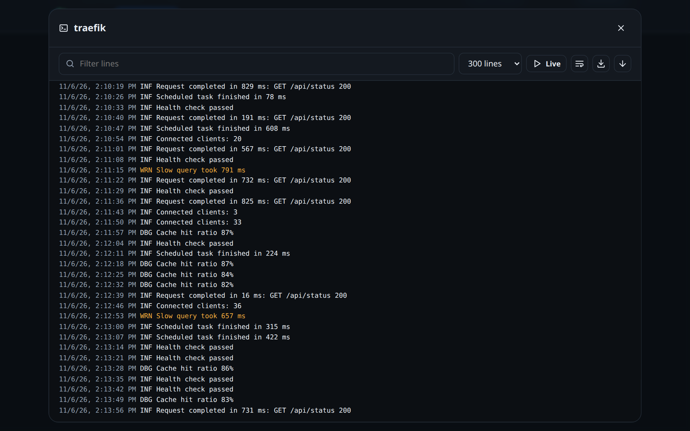

Logs
Read the last lines of any container, or follow them live, without a terminal.

Opening the logs
On the Containers page, the Logs button of a row opens its logs. Every line starts with the time Docker recorded it.
The controls
| Control | What it does |
|---|---|
| Lines | How many of the last lines to show: 100, 300 (default), 1000 or 5000 |
| Live | Follows new lines as they arrive. It turns itself off after 30 minutes: press it again. |
| Filter lines | Shows only the lines that contain the text |
| Wrap long lines | Wraps lines instead of scrolling sideways |
| Download | Saves the lines on screen as a .log file named after the container and the time |
| Go to the end | Jumps to the newest line |
Levels in colour
D2HA colours the lines it recognises:
| Colour | Lines that contain |
|---|---|
| Red | ERR, ERROR, FATAL, CRITICAL, PANIC, level=error, [error], error:, a traceback or an exception |
| Yellow | WRN, WARN, WARNING, level=warn, [warning], warning: |
A level written as a word wins: a warning line that carries an error= field stays yellow.
Good to know
Logs are for the web interface only. The API token that Home Assistant uses cannot read them.
Something wrong or missing on this page? Open an issue.